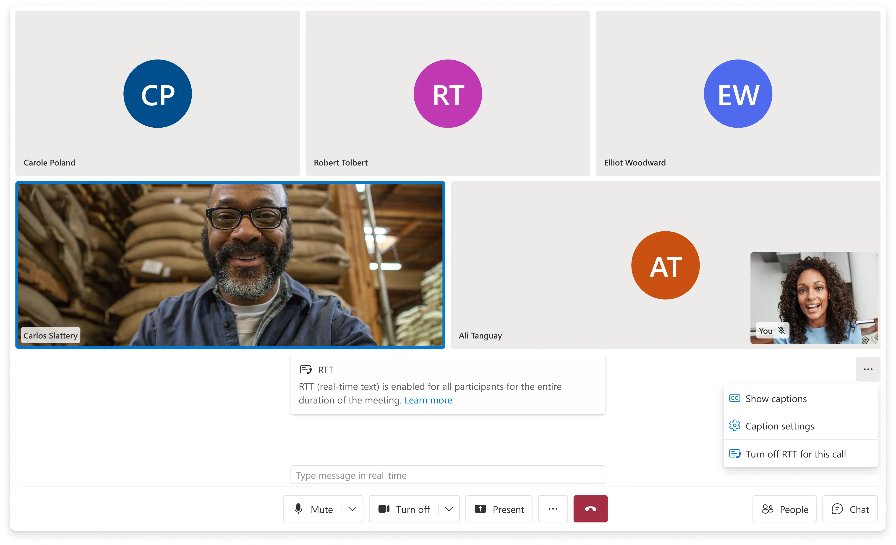

Real-Time Text
- Organization
- Microsoft
ACS UI Library - Role
- Product lead and designer
- Year
- 2024 – 2025
- Platform
- Web · Native
WebUI · NativeUI
Real-Time Text (RTT) lets people contribute to a call through text that appears as they type. I led product and design for Web and WebUI, working with a counterpart on Native and NativeUI. The feature shipped across all four SDKs in 2025.
My work focused on keeping typed contributions visible within the conversation. I defined the interaction model, revised message timing and captions integration, and worked with engineering to adapt the design to platform constraints.
Opportunity
Participation through text
When a caller relies on text, a separate chat panel can make participation difficult. Other participants may overlook messages or close the panel while the spoken conversation continues. This affects people with speech disabilities and anyone who cannot speak in their current setting.
RTT displays text character by character in the main call stage. Participants can follow a contribution while it is being written, without waiting for the sender to finish and submit a message.
Accessibility requirements
The team was working toward a June 2025 accessibility deadline. We needed to deliver RTT while parts of the underlying calling platform were still in development, which made release scope and technical dependencies central to the design.
The intended audience included people who are deaf or hard of hearing, people with speech disabilities, and callers who prefer or need to type. RTT provides the typed contribution; captions provide access to spoken contributions. The interface needed to support both within the same conversation.
I used the visibility of typed contributions as a criterion when evaluating layout, activation, and moderation decisions.

Design
Message timing
I revised two early assumptions: how long text should remain editable, and whether RTT should replace captions.
I initially proposed a 15-second editing window, with the duration left configurable because it had not been validated. A review of RTT on iOS and Samsung devices showed a shorter, two-to-three-second interval. I changed the design to commit text after three seconds of inactivity, aligning it with those existing patterns.
Image · Timing comparison
15 seconds → 3 seconds
Add a side-by-side Figma comparison of the original 15-second editing window and the shipped three-second commit. Label when text appears and when editing ends.
Captions and RTT
My first design replaced captions with RTT to limit competing text on screen. That removed access to spoken contributions for callers who needed both. I revised the captions window to host RTT alongside captions, with captions remaining independently available.
Image · Captions comparison
Separate needs, shared window
Add a side-by-side Figma comparison of RTT replacing captions in the initial design and RTT alongside captions in the shipped window.
Platform constraints
Engineering identified a constraint during development: the platform did not send an explicit signal that RTT was active. The client had to detect incoming RTT data to determine when to display the interface.
I removed pre-join activation because the client could only detect RTT after the call connected. Once RTT appeared, the panel remained visible so participants would not miss incoming text. The client also had to map messages to participants to display attribution.
These constraints changed the activation flow and panel behavior. I revised the design with engineering around the information the client could reliably receive.
Visibility and moderation
Three calls where a teammate pushed back and the decision either held or changed.
- Automatic opening
- I kept automatic panel opening when RTT starts. A teammate raised a valid concern: opening a panel mid-call can shift the layout while someone is reaching for a control. We considered a subtle indicator instead. I prioritized showing the text immediately because an indicator could leave a participant typing without being noticed.
- Feature availability
- I also kept RTT available rather than adding a developer option to disable the feature entirely. Some customers wanted that control for products outside the European market. My concern was that disabling RTT at the product level would prevent callers who rely on text from choosing it when needed.
- Organizer controls
- I initially proposed participant muting by analogy with audio controls. A colleague challenged whether peers should be able to suppress another person’s typed contribution. I revised the specification to restrict that capability to organizers, retaining moderation while limiting who could use it.
Scope
Release scope
I narrowed the first release around the platform capabilities and partner dependencies we could support by the deadline. Translation, telephone calls, Teams interoperability, and pre-join activation were excluded.
- Translation
- We had not resolved how translation should handle text that changes as it is typed. The chosen implementation also ruled out server-side processing, so I deferred RTT translation from the first release.
- PSTN
- Support for telephone calls depended on carrier implementation and deployment plans. Those dependencies were unresolved, so PSTN was outside the initial scope.
- Teams interop
- Interoperability depended on Teams implementing RTT. I excluded it from the first release until that dependency was ready.
- Pre-join
- Activation required a connected call and incoming RTT data. I removed pre-join activation from the release scope.
System
RTT demo
Try the RealTimeText component used in the UI Library. This is a local demonstration, not a connected call.
Shipped components
The UI Library implementation used four components to integrate RTT into the calling experience.
- RealTimeText
- Displays incoming text as it is typed, with an indicator for text still in progress.
- RealTimeTextModal
- Notifies participants that RTT is active and will remain on for the call.
- StartRealTimeTextButton
- Provides the entry point for starting RTT from the call control bar.
- CaptionsBanner
- Displays captions and RTT together, distinguishes in-progress text, and adds committed messages to the conversation.
Activation and visibility
RTT is off by default. Any participant can activate it from the control bar, making it available to everyone for the rest of the call. Text remains editable until the sender presses Enter or pauses for three seconds. Committing a message ends editing; the text has already appeared as it was typed.
The panel remains visible while RTT is active. This keeps typed contributions within view throughout the conversation, including when other participants are speaking.


Message completion
For the interaction design, I distinguished transmission timing from message completion: text needed to appear during typing, while the three-second pause determined when an editable message became final.
Image · Components
The four components
Add a labeled Storybook capture of RealTimeText, RealTimeTextModal, StartRealTimeTextButton, and CaptionsBanner.
Outcome
Release and rollout
The rollout began with Native Calling SDK public preview, followed by Web Calling, Web UI Library, and Native UI Library on January 30, 2025. General availability followed in Calling Web SDK 1.34.1 and UI Library 1.24.0, ahead of the team’s June 2025 deadline.
I coordinated the release, announcements, demos, and workshops across the four SDKs. Delivery involved the Calling Web, Native, UI, and Design teams, with partners in IC3 and Teams.
Live & public
Gaps and follow-up
What the release left open, and what I would scope differently next time.
- Measurement
- The release established feature availability, but we lacked the telemetry to assess adoption and use. I had identified messages sent and received, session duration, and regional adoption as measures. I would include that instrumentation in the initial release scope to evaluate whether RTT was supporting participation as intended.
- Screen-reader feedback
- Screen-reader notification of incoming RTT remained unresolved at release. I had raised the issue, but it needed further design and validation. This remained an accessibility gap in the experience.
- Scope planning
- I also committed to broader call-type coverage before confirming platform capabilities and partner dependencies. In future work, I would establish those constraints before setting scope, particularly for interoperability and pre-join behavior.
I owned product and design for Web and WebUI and coordinated with a counterpart leading Native and NativeUI. The Calling, UI, and Design teams delivered the feature together.